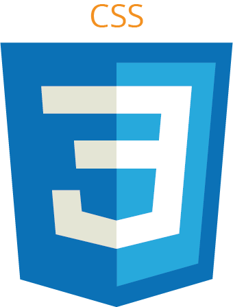
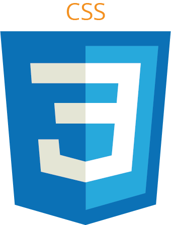

Description du projet
Ayant eu un parcours hors du commun, j'ai débuté ma première année de DUT MMi en deuxième semestre par un
projet
collectif. Ce projet consistait à la réalisation d'une application aidant les utilisateurs à mieux gérer
leur
jardinnage. Nous étions une équipe de trois avec des rôles bien spécifiques. Mon rôle était de
développer
l'application à partir des maquettes produites par mes collègues.
Cette application comprenait plusieurs fonctionnalités. Une page profil qui répertoriait les différentes
plantes
que peut posséder l’utilisateur dans son jardin. Des fiches techniques sur chacune des plantes étant mises
à
disposition des utilisateurs dans un répertoire de plantes. Des notifications pouvaient apparaître pour
rappeler à l’utilisateur qu’il était l’heure de s’occuper de l’une de ces plantes.
OUTILS UTILISÉS
 
